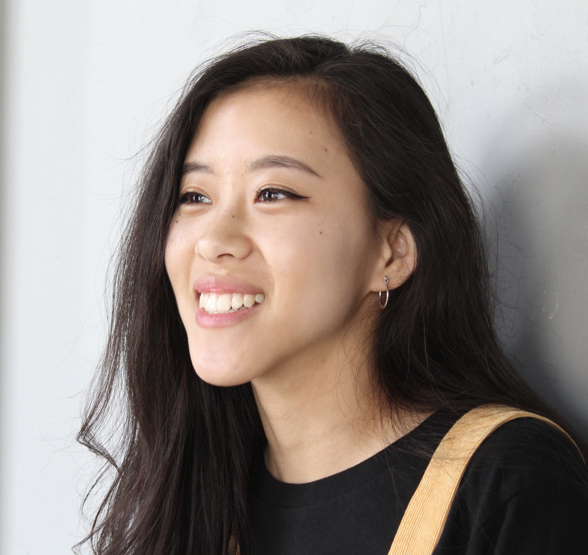

Primary Client Research
There were two focuses of the research I conducted on the client, The Relief Fund for Romania. The first was primary research on the client themselves, the second was outside research.


Secondary Research


Interviews
Due to multiple failed attempts to correspond with those at The Relief Fund for Romania, I was unable to conduct an interview with the client. However, it was possible to have interviews with members of three out of four of the main audience groups. Each participant had similar questions, but some were tailored specifically to their age group or occupation in order to get more specific feedback.
User Interviews
Amy Cannavo
Amy Cannavo is president of the Priscilla Circle women's ministry at her church in Bear, Delaware. Among other outreach projects, the Priscilla Circle also heads many of the church's charity and donation efforts.
Amy's interview shed some much important light on the more business aspect of charity work. While churches would love to help everyone, there are important things to consider when trying to discern whether or not to direct efforts towards a specific cause. The presence of financial information would be a necesity to church groups and potential partner orginizations. How much of the donations actially goes to aide? What other orginizations have partnered with this charity before? For this audience, legitimacy and facts were more important. Amy also noted that church members were more likely to donate and be involved if there was a return of information. This could be photos of progress made with funds, letters or notes from sponsored families, or even something as simple as an update on the project. This was definitely something to consider with sponsorship specifically, in what way could a personal connection be made?
Charlie Classe
Charlie Classe is an Art Education major at Anderson University. She represents the young adult portion of the audiences. As an art education student, Charlie brings both a fresh, young persepective but also one grounded in a passion for education and the arts, two things that the client has projects for.
This interview was helpful with many things, but mostly the aesthetic elements that would be present on the site. Simple and clean home and landing pages are a must, as they set the immediate tone for the rest of the site. Graphics and icons would also be helpful in order to visualize numbers and events better, especially with the amont of education taking place on the site. Making a personal connection was equally as important in this case as with church groups. In this case that means photos and stories to actually put names and faces to those in need. Social media is a major part of how young adults find and absorb information. Creation and use of these platforms would not only help increase traffic, but also raise more awareness of the present situation. Short videos or inforgraphics are the easiest to share on platforms like instagram and twitter, with youtube being a place where news and general information can be found. Ahe major takeaway from this interview was that the way information was delivered would be the most important when trying to and atract younger audiences and educate them in order to spread awareness.
Gina Beckmeyer
Gina Beckmeyer is a wife and mother of nine representing the largest portion of the target audiences, adults. Gina and her family are Catholic, bringing a religious factor into the charity discernment process.
In her interview, Gina expressed many similar sentiments to Charlie when it comes to aesthetics. The home page needs to be simple and tabs need to be simplified. Too much information at once can be very overwhelming. The lack of photos is also a recurring issue. As it is now, the site is very impersonal and gives no real insight into the real people on the other end. Interestingly, Gina stated that she would most likely find and donate to the site after hearing about it from a friend. this makes education and word of mouth, social media to be exact, even more important. In all three interviews, each participant said that they would donate to orphans and orphanages first out of the other main projects the client currently supports. This either means that more emphasis needs to be put on that project, or the other way around so that all issues receive donations equally.